Heron Brush: A level editor for any engine
Heron Brush builds levels and props from convex brushes, saves them as .map files and exports them to Godot, Unity, Unreal Engine and eight other engines, or to glTF and OBJ.

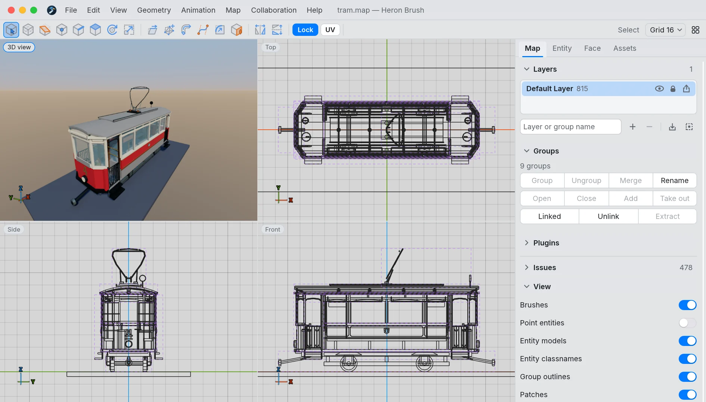
Runs on
Convex brushes
Levels and props are built from convex solids, the way Quake-lineage maps are. Maps stay plain-text .map files that the usual compilers read.
Exports to engines
Eleven engines plus glTF, GLB and OBJ, with collision, entities, animation and materials. Live links send unsaved edits to Godot, Unity, Defold and Flax.
Free and open source
GPL-3.0-or-later. Written in Rust, with a wgpu 3D view. The interface and the manual are in 30 languages.
Shapes and editing tools
Draw a shape, then reshape it with vertex, edge and face handles in any of the four views.
New to level design? The Level Design Book is a free guide to it.
Brush shapes
Drag in a view to draw a cuboid, stairs, an arch, a cylinder, a cone, a UV or icosahedron spheroid, a hollow sphere made of brushes, or 3D text. Each shape stays editable in Shape settings until you confirm it.
- Stairs with landings and turns
- Arches with edge-, vertex-aligned or scalable segments
- 3D text from a built-in polygon font

Vertex, edge and face editing
Drag corners, edges or faces directly and add new corners where you need them. Move, rotate, scale, shear and clip with handles, and merge, subtract, hollow or intersect brushes.

Fillet
The Fillet tool rounds the picked edges of a brush with a radius and a number of faces, and shows the result in the 3D view before you apply it. Corners where rounded edges meet can be mitred, rounded, chamfered or set back.
The rounding is made of ordinary convex brushes, so it compiles and exports like the rest of the map.

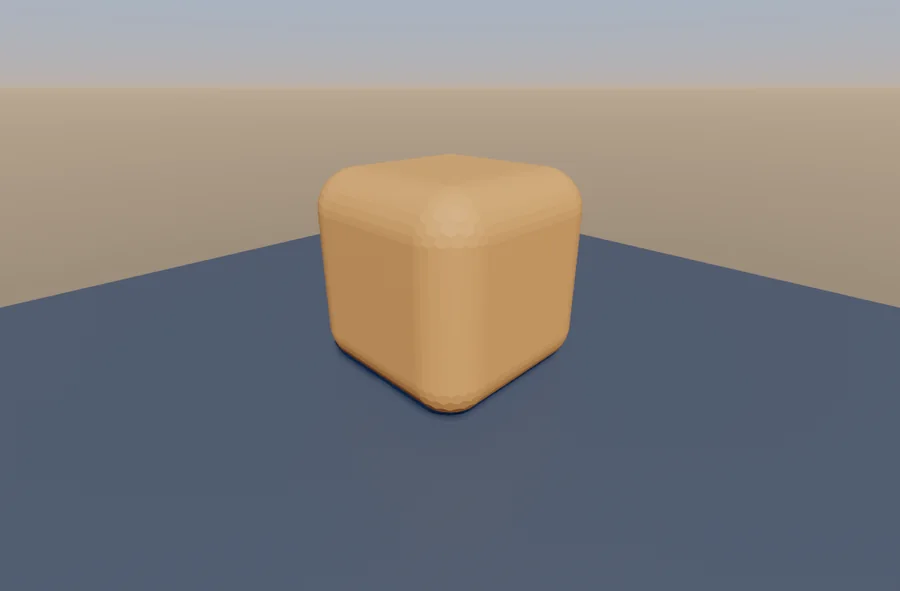
Join corner
Join corner joins two members that meet at a corner, such as the beams of a frame, into a mitred or rounded corner of the same thickness. The dialog shows the corner before and after, with the radius and number of segments for the outer and inner arc.

Sweep, inset and bevel
Sweep selected faces along an arc, a straight path or an S-bend, with travel, turn and scale; materials, paint and UVs follow the new faces. Inset and bevel draw faces in from their edges and push them out or cut a recess.

Colours, gradients and textures
Paint faces without any textures, or load textures and PBR materials from folders and archives.
Colours and gradients
Give each face a colour, or a linear or radial gradient with up to eight stops. In the 3D view a gradient shows handles on the face: drag the ends to place it, drag the stops along the line, click any handle to change its colour.

Textures and UVs
Textures load from folders, WAD files and PAK, ZIP and PK3 archives; PBR materials can carry normal maps. Move, turn and scale a texture with handles directly on the face in the 3D view, or in the UV editor.

Real-time renderer
The 3D view has its own renderer, written for Heron Brush, so you see the level lit while you build it: sun shadows, image-based lighting, ambient occlusion, PBR materials, point and spot lights with their own shadows, reflections, bloom and a procedural sky.
It runs on Metal, Vulkan and DirectX 12, and on WebGPU in the browser.


Entities and keyframe animation
Place entities from FGD, DEF and ENT definitions and animate brush entities on a timeline.
Entities and game profiles
Each game profile brings its entity classes with their properties and flags. Point entities show their models (MD2, MD3, OBJ, glTF).

Keyframe animation
Animate brush entities with clips on a timeline: position and rotation channels with Linear, Hold or Bezier keys, shown as lanes or as curves. Pose them in the views and trigger them with buttons and sensors. The preview plays in the editor and the clips go out with the export.

Live animation preview
Switch on Preview animations and the views play the map's motion: func_rotate and func_shuttle entities and keyframe clips set to play on start. The 3D view keeps its lights and shadows while things move.

Works with your engine
Exports carry collision, entities and their properties, animation, materials, water volumes, the sky and lightmap UVs. The .map file stays your editable source.
Engines
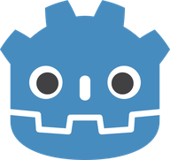
Godot
Unity- Unreal Engine
- Flax Engine
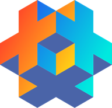
Defold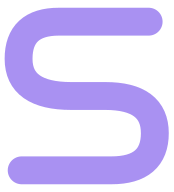
Stride- Cocos Creator
- GDevelop
Bevy
three.js
raylib
File formats
- glTF
- GLB
- OBJ
- MAP
Live links to engine editors
A live link sends unsaved edits from Heron Brush into the open Godot, Unity, Defold or Flax editor. It replaces only its generated branch and leaves your own nodes and scripts alone.

Works with your game
A game profile sets up the entity definitions and texture folders of a Quake-lineage game, so you can start mapping right away. For your own game, load its FGD file.
Game profiles
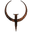
Quake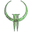
Quake 2- Quake 3
- Half-Life
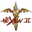
Hexen 2- Heretic 2
- Daikatana
- Kingpin
- Soldier of Fortune
- Wrath
- Quetoo
- D-Day Normandy
- Digital Paint: Paintball 2
- Your own game
Asset library
The bundled library has buildings, vehicles, furniture and creatures made of brushes. Drag one into the map and take it apart, or keep your own library of reusable models.
The demos are small games and levels made with the editor, each with an engine project.


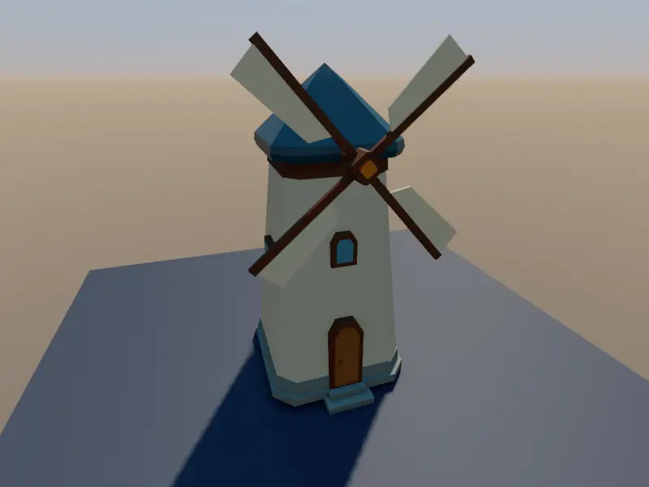
More features
Rendering
Render cameras
The render window sets up a camera with resolution, lighting presets and depth of field, previews it live and saves a PNG. Cameras are stored in the map.
Procedural sky
A sky with sun, horizon and ground colours in the 3D view and in renders. It follows the scene lighting.
A second 3D window
Move the 3D view into a window of its own, for example on another monitor, with full screen and its own view options.
Gameplay and engines
Browser playtest
Play the current map in a second browser tab. Unsaved edits reach the running level as you make them.
Compile, run and check
Compile and run profiles for map compilers, and map and leak checks with point and portal files.
Water, light and collision
Exports carry water volumes, collision, the sky and a second UV set for baked light.
Working together and with scripts
Live sessions
Edit one map together over a local network or the internet, with each person's camera and name in the 3D view.
MCP server
Build and edit maps from scripts or AI agents through the Model Context Protocol.
Plugins
Extend the editor with plugins in a sandboxed scripting language.
Editing
Patches
Bézier patches with a control point tool, and faces turned into patches.
Layers and linked groups
Layers, groups and linked groups, where an edit to one copy reaches all of them.
Interface
30 languages
The interface and the offline manual are translated into 30 languages.
Blender keymap
Use Blender's shortcuts by switching the keymap in Preferences.
Touch and tablets
The Android build has touch input and a layout for tablets.
Other level editors
Heron Brush is one of several brush-based level editors. If it does not suit your project, one of these may.
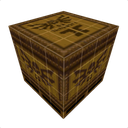
TrenchBroom
Open-source editor for Quake and related games, on Windows, macOS and Linux.
Hammer
Valve's editor for GoldSrc and Source games. Source 2 ships a newer version.
J.A.C.K.
Hammer-style editor for BSP games such as Half-Life and Quake I to III.
GtkRadiant
Radiant editor for id Tech games such as Quake III Arena, run by volunteers.